A fresh worker with a clean window and a named role.
Let Your Agents Focus
Complete the software lifecycle with dedicated review and document agents, then give every step a fresh context, a committed prompt, a narrow contract, and one question to answer well.
Mastery promise. By the end, you will be able to state the five SDLC questions, defend review as distinct from testing, trace the typed review → patch → document machinery, diagnose context pollution, run the course workflow without hand-editing application code, and teach why a focused fleet is more improvable than one heroic session.
A committed, versioned instruction that can be rerun.
One lifecycle question, one output contract, one way to improve.
A working feature can still be the wrong feature
The lesson opens after planning, building, and testing already work. The remaining gap is not more code generation. It is disciplined judgment: proving that the implementation matches the request, preserving how it works, and feeding that knowledge into the next planning agent.
Imagine an issue that asks for one-click CSV exports. The agent adds the endpoints. Clicking Export downloads a correct CSV. Functional testing has something legitimate to celebrate. Yet the issue also asked for the Export control to sit directly left of Hide. The implementation places it in the middle of the header. Nothing crashes. The download works. The result is still not what was requested.
That small placement error is the hinge for this entire chapter. It proves that “works” and “matches the specification” are different predicates. It also proves that evidence can help even when an agent misjudges its own evidence: the reviewer uploads a screenshot, the human sees the mismatch quickly, and a patch workflow repairs it. Then a document agent turns the finished branch into an application document and adds a condition telling future planning agents when to read it.
The architecture is deliberately legible. Separate uv scripts run separate prompt templates. A tiny JSON state file carries the ADW ID, issue, branch, plan, and issue class. Strict output types sit beside prompt contracts. Severity categories encode release judgment. A retry cap prevents an endless self-repair loop. The lesson does not ask you to trust an all-purpose intelligence. It asks you to design a system in which each agent answers one question and leaves receipts.
What you are training
- SeparationGive plan, build, test, review, and document distinct questions instead of blending them into one vague “do the work” session.
- Context disciplineSupply the minimum context required for one purpose, then start the next phase with a fresh window.
- ProofTurn review into typed, severity-triaged evidence attached to the issue and pull request.
- RepairRoute misses through a surgical patch workflow so the system—not your reflexes—learns to build on your behalf.
- MemoryGenerate application documentation and conditionally load it for future work without bulk-polluting every prompt.
The course system you will study
The source of truth is the tracked tac-6 course repository. New lesson machinery includes adws/adw_review.py, adws/adw_patch.py, adws/adw_document.py, new composed workflows, .claude/commands/review.md, patch.md, document.md, conditional_docs.md, prepare_app.md, and an optional Cloudflare R2 uploader. The application is the same Natural Language SQL system wrapped by a more complete agentic layer.
Dan’s on-camera run uses issue #14, PR #15, and ADW ID 490eb6b5. Those values are evidence from his run, not constants in the committed repository and not values you should copy into commands. Your issue, pull request, and ADW ID will differ.
The SDLC is five questions
A lifecycle stage becomes delegable when its responsibility can be stated as a question with observable evidence. TAC-6 completes the set by adding review and document as first-class answers.
1 · Hook — concrete failure
Three green stages, two unanswered questions
Your planner created a detailed specification. Your implementer made the change real. Your test agent showed that the behavior runs. The pull request is still hard to approve because nobody has compared the finished artifact with the exact request, and the next agent will have to rediscover how the feature works. The workflow stopped where the code stopped, not where engineering stopped.
This is a common automation trap: shipping machinery is optimized around producing code, so non-code responsibilities become optional human cleanup. TAC-6 refuses that boundary. Review and documentation are not aftercare. They are lifecycle stages with their own prompts, scripts, artifacts, and failure policies.
2 · Picture — question-shaped SDLC
One stage, one question, one executable boundary
What are we building?
adw_plan.pyDid we make it real?
adw_build.pyDoes it work?
adw_test.pyIs it what we asked for? Prove it.
adw_review.pyHow does it work?
adw_document.py3 · Story — the lesson’s scaffold
The fifth question changes the first
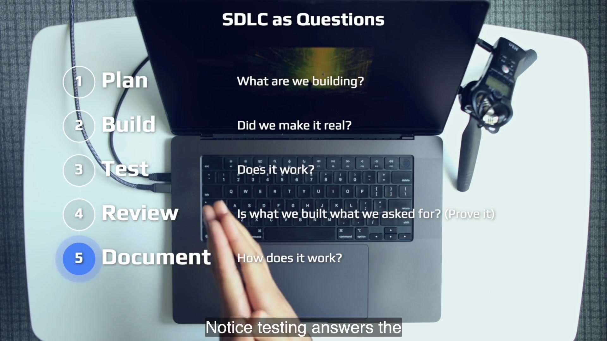
Read the arrows in both directions. Forward, an issue becomes a plan, implementation, test evidence, conformance proof, and documentation. Backward, the documenter adds a conditional entry that a future planner reads when the next task matches. The endpoint is therefore not a pile of Markdown. It is a loop back into planning.
4 · Name it
SDLC as questions and answers
The wording is diagnostic. If two stages answer the same question, their boundaries are unclear. If an important question has no stage, the system depends on hidden human labor. “Run all checks” is not a useful stage definition; “does it work?” is. “Look it over” is vague; “does it match the request, and where is the proof?” is operational.
5 · Worked example — read the composers
A composed workflow is a sentence made of questions
adws/adw_plan_build_review.py is explicit: it runs Plan, Build, and Review, says that tests are skipped, and chains the scripts through adw_state.json. adws/adw_sdlc.py calls all five phases in order. The orchestration is intentionally unglamorous: run one process, stop if it fails, then call the next.
# The complete course pipeline, paraphrased from adw_sdlc.py
adw_plan.py(issue, adw_id)
adw_build.py(issue, adw_id)
adw_test.py(issue, adw_id, "--skip-e2e")
adw_review.py(issue, adw_id)
adw_document.py(issue, adw_id)Notice what composition does not do. It does not merge the agents’ conversation histories. Persistent state carries dense identifiers and artifact paths; the next purpose starts with its own prompt. Separation lives at the process and context boundary while continuity lives in state.
6 · You try — question audit
Find the hole in one workflow you already own
- Write the start and end of one recurring engineering workflow.
- List each named stage without looking at this chapter.
- Turn every stage into a question.
- Circle duplicate questions and questions answered only by a human’s memory.
- Add exactly one missing stage and name the artifact that would prove its answer.
Pass when every stage has a unique question and a durable artifact. A meeting, intuition, or “the agent said it was done” is not durable evidence.
7 · Common fail + fix
Failure: treating five labels as ceremony
Teams can copy the words Plan, Build, Test, Review, and Document while leaving the same generic agent responsible for all five in one long session. The board now has more columns, but the agent still drags every assumption, false start, test log, and implementation detail through the whole task.
Fix: give each label a question, fresh invocation, prompt file, output contract, and failure boundary. The value comes from separation that the system can enforce, not from the vocabulary alone.
8 · Current practice
The implementation surface can change; the five questions remain
9 · Retrieval
Close the section, then answer cold
State the five lifecycle questions in order.
Reveal answer
What are we building? Did we make it real? Does it work? Is what we built what we asked for—prove it? How does it work?
What crosses phase boundaries if conversation history does not?
Reveal answer
Persistent state and durable artifacts: ADW ID, issue, branch, plan file, issue class, specs, test results, review evidence, and documentation.
10 · Teach-back
Teach the five-stage lifecycle to a teammate using only questions. Then explain why Review carries “Prove it” and why Document points back toward Plan.
Pass if your listener can identify a workflow hole without needing the names of Dan’s scripts.
Review is not testing
Testing asks whether behavior works. Review asks whether the built artifact matches the requested artifact. Green tests can support review, but they cannot silently replace the specification.
1 · Hook — concrete failure
The CSV downloads perfectly from the wrong place
Dan’s issue asks for one-click table and query-result exports, two endpoints, an appropriate icon, and precise button placement. The implementation produces valid downloads. A functional test can click Export, receive data, and pass. Yet the query-result control floats away from Hide instead of sitting directly to its left. The feature works and violates the issue at the same time.
If your definition of done is “tests are green,” the mismatch ships. If your definition is “a reviewer glanced at the code,” it may still ship. The requested layout is visible in the running product, so the strongest review evidence is a picture of the critical path compared against the placement language in the spec.
2 · Picture — two predicates
Passing one gate does not imply passing the other
Testing
Does it work?
- Exercise behavior
- Detect functional regression
- Return pass/fail evidence
- Example: CSV endpoint returns a valid file
Review
Is it what we asked for?
- Read the specification
- Inspect the implementation and critical paths
- Return conformance proof
- Example: Export is directly left of Hide
3 · Story — the screenshot tells on the report
The reviewer misses; its evidence still raises review velocity
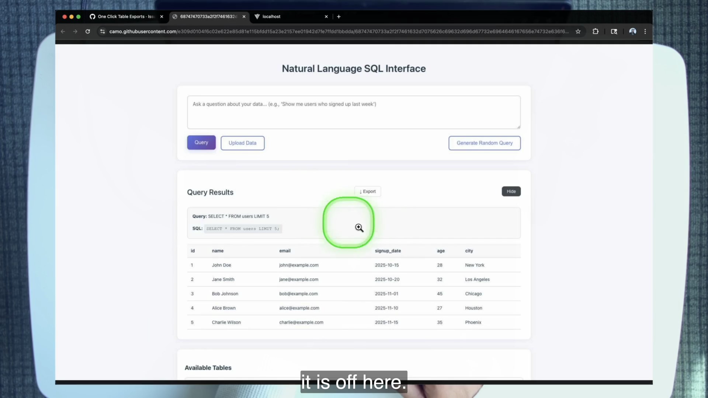
This is an important mixed result. The review agent reports success, so its judgment is wrong. The proof transport is useful, so the human sees the problem quickly. Mature system review can hold both facts: one component failed, another reduced the cost of detecting that failure. The correct response is not “screenshots are useless” or “the model is useless.” It is to trace which layer did and did not carry the requirement.
4 · Name it
Spec-conformance review and review velocity
Review velocity is not the speed at which an agent says “looks good.” It is the speed at which a responsible human can reach a high-confidence yes or no. A live asset—a screenshot, report, video, or other hard artifact—moves the decision surface to the reviewer instead of sending the reviewer on a scavenger hunt.
5 · Worked example — read review.md as a boundary
Navigation guides are not tests
.claude/commands/review.md instructs the reviewer to read the branch diff and spec, prepare the application, use matching e2e/test_*.md files only as navigation guides, take one to five numbered screenshots, and compare critical paths against requirements. It explicitly says the step is not testing.
The contract also narrows the work away from general code-quality review. The purpose is request conformance. Architecture, style, and correctness concerns may be handled by other prompts and tools, but letting this reviewer re-litigate every engineering dimension would consume its focused window and blur the release decision.
6 · You try — split one acceptance criterion
Write one test and one review proof for the same feature
- Choose a visible behavior in the course app.
- Write a testing assertion that proves the behavior executes.
- Write a review assertion that proves the result matches the request.
- Name the smallest artifact that lets a human verify the review assertion.
- Explain why the first assertion cannot prove the second.
Example shape: “download returns CSV” versus “download control is immediately left of Hide”; response assertion versus targeted screenshot.
7 · Common fail + fix
Failure at both extremes
CI equals review: a valid download masks a layout violation. Review equals everything: one agent is asked to retest, critique architecture, inspect style, search for security problems, judge UX, and compare the spec. Its purpose becomes “be smart about the whole repository,” which is not a usable contract.
Fix: keep predicates separate. Let testing prove behavior. Let review compare request and artifact. Add another focused stage if a different engineering uncertainty matters enough to own.
8 · Current practice
Make image reading part of the default review contract
9 · Retrieval
Why did review have work after the CSV download succeeded?
Reveal answer
The feature violated a placement requirement in the spec. Functional success answered “does it work?” but not “is it what we asked for?”
What does review use the e2e Markdown files for?
Reveal answer
Only as navigation guides for where to capture critical screenshots, not as tests.
10 · Teach-back
Explain the export-button failure to someone who believes green CI means the feature is done. Use the two questions, one testing artifact, and one review artifact.
Pass if they can invent a new example where behavior succeeds but the requested form is wrong.
One agent, one prompt, one purpose
The tactic is a structural commitment: every step receives a fresh agent, exactly one committed prompt, and one question-shaped purpose. Singular purpose does not imply a tiny or easy prompt.
1 · Hook — concrete failure
The god-session that remembers everything except the goal
A single session reads the issue, explores the repository, debates three plan options, implements one, sees noisy test logs, makes repairs, summarizes a diff, opens a browser, captures screenshots, writes docs, and prepares a pull request. The window contains an impressive amount of information. It also contains abandoned ideas, obsolete file states, tool noise, and instructions for responsibilities that conflict.
When the reviewer reaches the placement requirement, its attention competes with everything that came before. The session is large, but the purpose is weak. TAC-6 takes the controversial opposite position: build a fleet of small workers around durable artifacts instead of asking one worker to preserve perfect attention across the lifecycle.
2 · Picture — the tactic
Repeat the boundary until it becomes architecture
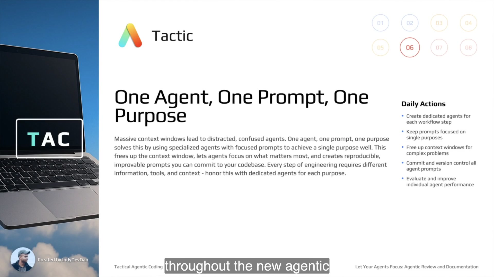
3 · Story — the file tree becomes the cast
Low-level workers compose without sharing a mind
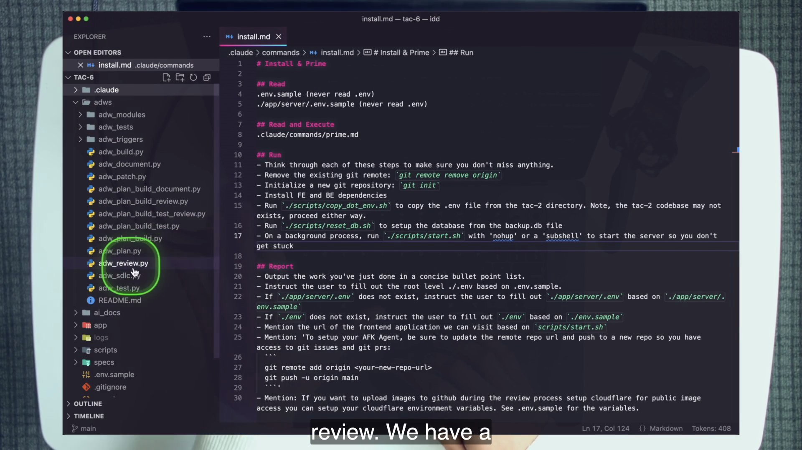
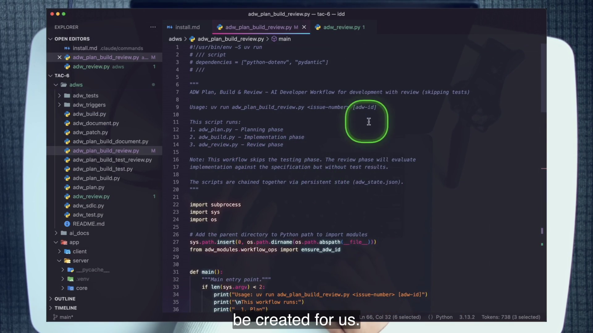
4 · Name it
One · one · one
This nuance prevents the most tempting misread. A review prompt may contain setup, variables, diff instructions, screenshot policy, severity guidelines, and an explicit JSON contract. That is substantial work. It is still one purpose because every instruction exists to answer spec conformance with proof.
5 · Worked example — census the agents
Names, commands, and purposes line up
Reviewer
Compares implementation with the spec and returns typed evidence.
/reviewPatch planner
Turns one blocking change request into a minimal patch plan.
/patchPatch implementor
Executes that plan through the shared implementation prompt.
/implementAt the top of adw_review.py, the roles are declared as constants: reviewer, review patch planner, and review patch implementor. run_review() constructs one AgentTemplateRequest for /review. The patch helper constructs one request for /patch, validates its returned path, then calls the reusable /implement. The same agent does not plan and implement simply because both steps concern the same blocker.
A repository search for slash_command= is the tactic’s mechanical audit. The extract records 14 call sites in four files. Each call is a boundary where you can ask: is this invocation named for one responsibility, does it run one prompt, and does its output feed a durable next step?
6 · You try — one-one-one census
Map the run artifacts back to purposes
- After the lab run, list directories under
agents/{adw_id}/. - For each named agent, locate its saved prompt.
- Write the single purpose beside the slash command.
- Flag any purpose containing “and” that names a second lifecycle question.
- Confirm that continuity comes from files or state, not an agent receiving a second prompt.
7 · Common fail + fix
Failure: tiny prompts or a hidden mega-session
Tiny-prompt cargo cult: useful setup, evidence rules, and schema instructions are removed to make the prompt look “focused.” The agent’s purpose stays singular but its execution becomes under-specified. Hidden mega-session: plan, build, and review are sent as sequential messages to the same interactive context to “save tokens.” The labels survive while the polluted window returns.
Fix: judge focus by the question and output contract. Keep every instruction needed to answer that question well. Start a fresh worker when the question changes.
8 · Current practice
The course exposes the primitive; newer surfaces package it
9 · Retrieval
What is the strongest one-sentence proof that the tactic is real in this repository?
Reveal answer
No agent runs more than one prompt; each named invocation has one slash command and one output purpose.
What does “one purpose” not mean?
Reveal answer
It does not mean the prompt is small or the work is simple. A single-purpose prompt can be large and demanding.
10 · Teach-back
Use reviewer → patch planner → implementor to teach the tactic. Explain why three agents are not needless fragmentation and why one large review prompt can still be focused.
Pass if your explanation names fresh context, a durable handoff, and one output contract per agent.
Minimum context beats maximum context
Every token is another variable the agent must reason about. The goal is not to starve a worker; it is to give one purpose the minimum complete context and withhold unrelated lifecycle history.
1 · Hook — concrete failure
The window gets bigger while attention gets worse
You paste the issue, architecture notes, whole repository map, two previous chat transcripts, test output, screenshots, documentation, and rejected implementation ideas into the reviewer “so it knows everything.” The requirement is somewhere inside. So are hundreds of irrelevant alternatives. The agent must decide which facts remain live and which were superseded before it can compare the product with the spec.
More capacity delays the visible failure; it does not remove the cognitive burden. Dan calls the result context pollution, context overloading, and toxic context: the worker becomes distracted, confused, or detached from the original task even though the information is technically present.
2 · Picture — one polluted room, five clean rooms
Preserve continuity in artifacts, not noise
One god-window
Every phase, false start, tool log, and responsibility competes.
issuereporejected plandifflogstestsscreensdocsold statepatchesPR
Five fresh windows
Each receives its prompt, dense identifiers, relevant artifacts, and one question.
Plan
issue + codebase
issue + codebase
Build
spec + repo
spec + repo
Test
behavior + checks
behavior + checks
Review
spec + diff + proof
spec + diff + proof
Document
diff + spec + assets
diff + spec + assets
3 · Story — a seven-line handoff
The ADW ID carries continuity without carrying the whole conversation
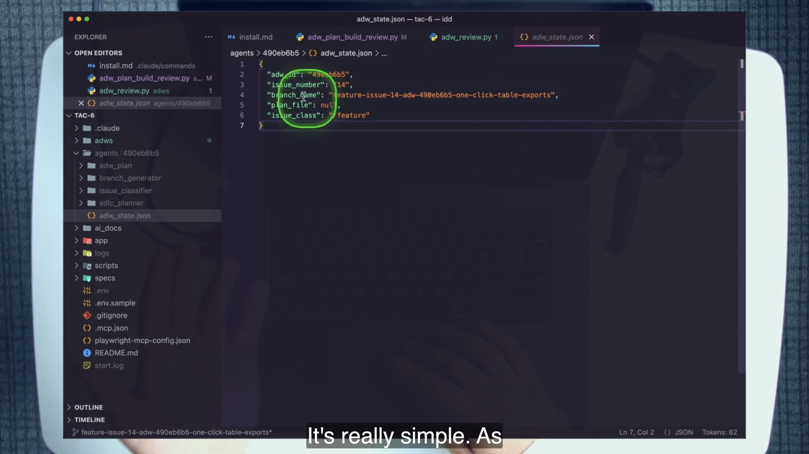
The state file shown during planning contains the ADW ID, issue number, branch name, plan file, and issue class. As phases finish, those fields become a compact routing packet. The reviewer can load state, check out the right branch, and find the spec. It does not need the planner’s internal conversation. The course code tries to add review_screenshots to this state, but ADWState.update() filters everything except the five core fields. The documenter therefore falls back to agents/{adw_id}/reviewer/review_img when local screenshots exist. That mismatch is a real state-contract bug, not a sixth field to memorize.
4 · Name it
Context pollution and the minimum context principle
Minimum does not mean arbitrary omission. A reviewer needs the spec, relevant diff, a running app when visual proof applies, and an output contract. It does not need the planner’s discarded alternatives or the implementer’s full tool trace. Context engineering is as much subtraction and routing as collection.
5 · Worked example — two context filters
Variables compress; conditional docs gate
The prompt templates declare variables such as adw_id: $1, spec_file: $2, and a computed review-image directory. These information-dense keywords are referenced throughout the prompt. They keep a stable instruction file reusable while the workflow injects only the run-specific state.
conditional_docs.md applies the same principle to repository knowledge. It tells planning agents to read a document only when one of its conditions matches the task. The committed baseline has four entries: the root README, client stylesheet, ADW classifier prompt, and ADW README. It is an index with gates, not a command to bulk-load every document.
Bypassed per step by a fresh window.
Reduced by templating repeatable judgment.
Still real; decomposition does not erase the problem.
Dan names those three constraints and deliberately excludes model intelligence. Specialized agents bypass two of three: they free the window and encode more of the engineer’s reusable skill into prompts. They do not make a hard codebase simple.
6 · You try — context budget
Design the reviewer’s smallest complete packet
- Write the exact question the reviewer owns.
- List the artifacts without which the answer would be guesswork.
- List three tempting artifacts that belong to another phase.
- Replace raw history with one dense identifier or file path where possible.
- State the rule that would load one application document only when relevant.
Pass if removing one more item would make the review incomplete, while adding a discarded plan or full chat log would not improve the contract.
7 · Common fail + fix
Failure: cargo-culting context or surviving on compact
Everything everywhere: every document and transcript enters every phase “to be safe.” Compression dependence: one long session is repeatedly compacted so work can continue. Dan treats compact as a band-aid because compression necessarily loses information; it manages the symptom of a bloated session.
Fix: start fresh when the purpose changes. Carry durable artifacts, not conversation residue. Use conditional indexes and explicit variables to pull only the knowledge the current question needs.
8 · Current practice
Context engineering has more controls, not a different objective
9 · Retrieval
Name the three constraints and the two specialized agents bypass.
Reveal answer
Context window, codebase-plus-problem complexity, and your abilities. Fresh specialized agents bypass the context-window and personal-ability constraints; complexity remains.
Why is compact a band-aid in this lesson?
Reveal answer
It compresses an already overloaded session and loses information. A fresh context per purpose avoids dragging the pollution forward.
10 · Teach-back
Draw one large window and five small windows. Teach what crosses between the small ones, what stays behind, and why a larger capacity does not remove relevance decisions.
Pass if you can defend both an included item and an intentionally withheld item for the review phase.
Committed prompts become evals
A one-purpose prompt is not only an instruction. Once it is committed and the run state is reproducible, it becomes an experimental surface: change one variable, rerun the same step, and compare typed outcomes.
1 · Hook — concrete failure
Prompt improvement that evaporates with the chat
A reviewer misses a requirement. You add a clarifying sentence in the live conversation, rerun from an unknown state, and get a better answer. The session ends. Nobody can say which instruction changed, whether the better result came from a different diff, or how to reproduce it next week. The improvement exists only as memory and luck.
This is prompt archaeology: digging through chat history for the sentence that seemed to help. It is the opposite of engineering. A workflow step becomes evaluable only when its instruction and starting state survive the run.
2 · Picture — the smallest eval loop
Stable input, one changed knob, comparable output
Return to the pre-review branch state.
git checkout …Edit prompt, model, thinking, or tool policy.
review.mdUse the same issue and ADW state.
adw_review.pyDiff the typed review results and proof.
ReviewResult3 · Story — the prompt and type nearly share a contract
A visible seam invites comparison—and exposes drift
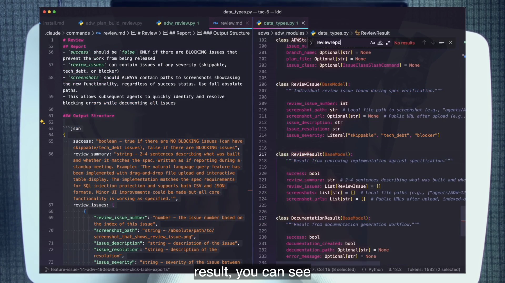
The course also routes models by purpose in adws/adw_modules/agent.py: review and patch use opus; document uses sonnet; other commands have their own entries. The aliases are period detail, but the experimental seam is durable. You can change the model for one slash command without changing every stage.
4 · Name it
Evals for the agentic layer
The lesson names both an explicit and a passive form. Explicitly, restore, change one knob, rerun, and compare. Passively, observe recurring misses and successes while using the workflow in-loop; your operational experience begins to form an evaluation set. In both cases, the prompt must live somewhere more durable than a disappearing context window.
5 · Worked example — evaluate screenshot reading
Turn the lesson’s miss into a controlled test
- Preserve the branch state in which Export is misplaced.
- Run
uv run adws/adw_review.py <issue#> <adw-id> --skip-resolutionand save the returned review data. - Through the agentic workflow, add the instruction that every captured image must be read during review.
- Restore the same pre-review state.
- Rerun with the same issue, spec, and ADW ID, then compare success, issues, severities, screenshots, and summary.
The comparison is not perfect experimental science: model calls remain non-deterministic. It is still far better than changing the prompt and the code state simultaneously. The point is to make behavior changes inspectable and repeatable enough to learn.
SLASH_COMMAND_MODEL_MAP = {
"/review": "opus",
"/document": "sonnet",
"/patch": "opus",
# other one-purpose routes omitted
}6 · You try — write an eval card
Specify before you spend the run
Create a four-line eval card for the reviewer:
- Frozen input: issue, branch commit, spec path, ADW state.
- One changed variable: exact prompt sentence or model route.
- Observable outputs: blocker detection, screenshot use, summary, artifact paths.
- Decision: keep, revert, or gather another run.
Pass if a teammate can reproduce the comparison without reading your original conversation.
7 · Common fail + fix
Failure: changing the prompt, state, and success rule together
A different model is tried on a different feature after the prompt and screenshot tool have also changed. The second result looks better, but the causal story is unknowable. Another failure is judging only the final boolean: two reviews both pass, while one supplies clear proof and the other supplies vague screenshots.
Fix: freeze the branch and request, change one knob, and compare the complete typed contract plus its hard assets. Record the change in git so the evaluation remains attached to the behavior it tested.
8 · Current practice
Purpose-level routing is increasingly first-class
9 · Retrieval
Which two properties make a workflow step evaluable?
Reveal answer
A committed prompt and reproducible starting state, with a comparable output contract.
Name three knobs you could change one at a time.
Reveal answer
The prompt instruction, model route, thinking mode, or agentic tool.
10 · Teach-back
Teach the difference between “I improved the prompt” and “I evaluated a prompt change.” Include the frozen state, one knob, typed result, and git history.
Pass if your learner can explain why a better-looking second run is insufficient when three variables changed.
The review ADW is a typed proof machine
The review workflow turns a broad instruction—compare the implementation with the specification—into a stateful pipeline with typed output, visual evidence, severity triage, loud parse failure, bounded repair, and issue/PR reporting.
1 · Hook — concrete failure
“Looks good” cannot drive the next step
An agent writes a thoughtful paragraph: the feature seems aligned, the code appears clean, and there may be a small UI concern. Downstream code now has to infer whether the release should block, whether a patch should be planned, which screenshot shows the problem, and how many issues exist. A prose review may be useful to a human and unusable to an automated lifecycle.
The course makes the decision surface explicit. Success is a boolean with one meaning: no blockers. Issues have numbered identities, descriptions, resolutions, screenshots, and one of three severities. Parse failure becomes a blocker instead of an accidental pass. The workflow can safely branch because judgment has a schema.
2 · Picture — prompt contract meets code contract
The fields align; one top-level instruction does not
review.md · output
{
"success": boolean,
"review_summary": string,
"review_issues": [{
"review_issue_number": number,
"screenshot_path": string,
"issue_description": string,
"issue_resolution": string,
"issue_severity": string
}],
"screenshots": [string]
}data_types.py · input
class ReviewIssue(BaseModel):
review_issue_number: int
screenshot_path: str
screenshot_url: Optional[str]
issue_description: str
issue_resolution: str
issue_severity: Literal[
"skippable",
"tech_debt",
"blocker"
]
class ReviewResult(BaseModel):
success: bool
review_summary: str
review_issues: List[ReviewIssue]
screenshots: List[str]3 · Story — follow the main method
State in, proof out, blockers back through the loop
The workflow requires both issue number and ADW ID. It loads agents/{adw_id}/adw_state.json, trusts the state’s issue number when available, checks out the recorded branch, verifies environment variables, fetches repository context, and locates the spec. The spec search is layered: state first, then diff, then a branch-pattern glob.
An R2Uploader is initialized for screenshot hosting. The reviewer runs through /review, which prepares the app, reads the spec and diff, follows critical paths, and returns JSON. The code parses that response into ReviewResult. Screenshots and issue screenshots are uploaded when R2 is configured, and public URLs are attached to the result.
The next handoff contains an instructive code bug. adw_review.py calls state.update(review_screenshots=…) and logs that the URLs were saved. But ADWState.update() accepts only adw_id, issue number, branch, plan file, and issue class; save() serializes only those fields. The screenshot URLs are silently discarded. adw_document.py then sees no screenshot state and uses its local review_img directory fallback if that directory exists.
The formatted issue comment groups blockers, tech debt, and skippable findings with distinct markers and appends the raw JSON. If blockers exist and resolution is enabled, only blockers enter create_and_implement_patch(). The implementation is reviewed again, at most three attempts. Git operations are finalized and the process exits unsuccessfully if blockers remain.
4 · Name it
Severity guidelines as templated judgment
Dan motivates the categories with a behavioral observation: agents are agreeable and good at finding things when asked. Without triage, a diligent reviewer can turn every nit into a release stop. Severity is not decorative metadata. It is the template’s encoded decision policy.
5 · Worked example — trace three failure policies
Every guardrail answers a specific pathology
Record it. Do not block or auto-resolve.
Record future cost. Do not block or auto-resolve.
Set failure, patch, re-review, and stop after three attempts.
Malformed output: if agent execution fails or JSON parsing throws, run_review() synthesizes a failed ReviewResult containing a blocker. The pipeline fails loud. Over-eager findings: the three severities prevent every issue from blocking. Infinite self-repair: MAX_REVIEW_RETRY_ATTEMPTS = 3 caps the patch-and-review loop.
Proof transport failure: R2 screenshot hosting is optional. Without all four Cloudflare values, the uploader disables and local paths remain. That is degraded presentation, not a reason to fabricate success or crash the review. The evidence policy and hosting path are separate concerns.
6 · You try — classify before revealing
Apply the release policy to four findings
- The Export button works but violates the issue’s exact placement and harms the requested interaction.
- A non-critical label could be slightly clearer.
- The implementation creates a maintainability cost that does not block current behavior.
- The reviewer returns Markdown around invalid JSON.
Assign a severity or pipeline behavior to each, then reveal.
Reveal classification
Placement violation: blocker in the lesson’s review framing. Minor label: skippable. Maintainability cost: tech debt. Invalid JSON: synthesized blocker because the typed contract could not be trusted.
7 · Common fail + fix
Failure: removing the “bureaucracy”
A team simplifies the workflow by accepting free-form prose, removing severities, and letting repair continue until success. The result looks flexible and becomes impossible to govern. Prose must be heuristically parsed, nitpicks trigger patches, and a stubborn failure consumes unbounded runs.
Fix: preserve the typed boundary, triage vocabulary, loud failure, and retry cap. Simplify implementation only after you can state which pathology each removed guardrail used to contain.
8 · Current practice
Proof hosting can vary; proof-in-review cannot
9 · Retrieval
Which severities block and auto-resolve?
Reveal answer
Only blocker. Skippable and tech debt remain visible without blocking.
What happens on parse failure, and what caps repair?
Reveal answer
Parse failure becomes a synthetic blocker-severity ReviewResult; resolution is capped at three attempts.
Why does review require the ADW ID?
Reveal answer
It needs prior state to locate the branch, plan/spec, issue identity, and artifacts created by earlier phases.
Does review_screenshots survive in the tracked state file?
Reveal answer
No. The reviewer tries to save it, but ADWState.update() filters it out and save() serializes only five core fields. The documenter relies on its local review_img fallback.
10 · Teach-back
Walk a malformed review response from agent output to release stop. Then walk a tech-debt finding through the same pipeline and explain why it does not patch automatically.
Pass if you mention schema parsing, synthetic blocker, grouping, resolution filter, and retry cap.
Patch the miss without reclaiming the keyboard
A review finding becomes a separate problem class: one surgical request, one minimal plan, the shared implementor, validation, commit, and pull-request update. The smallness of the fix is the reason to train the system, not a reason to bypass it.
1 · Hook — concrete failure
Your hands are faster for ten seconds—and slower forever
The Export button needs a tiny layout nudge. You know the likely file. Opening the editor and moving it feels obviously efficient. Yet a hand-fix teaches neither the reviewer nor the patch machinery. The next misplaced control reaches the same human bottleneck, and no committed plan records the intended scope or validation.
Dan refuses the shortcut because the lesson is about the system that builds the system. Local speed is not the only unit. Reproducibility, out-loop operation, and reusable repair behavior matter more than winning one ten-second race.
2 · Picture — surgical workflow
One review change request becomes one patch artifact
Issue comment contains literal adw_patch plus request.
Two to five steps under specs/patch/.
Shared /implement executes only the patch plan.
Commit, issue comments, visible fix, existing PR updated.
3 · Story — one terminal contains the loop
Plan, implement, report, and update the existing PR
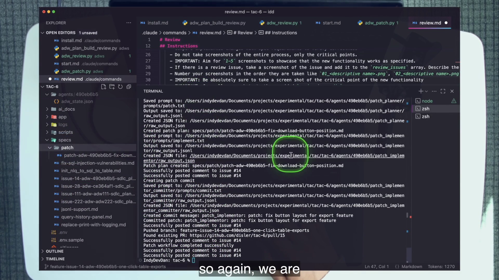
specs/patch/, implementor commit, issue update, existing PR, and completion message.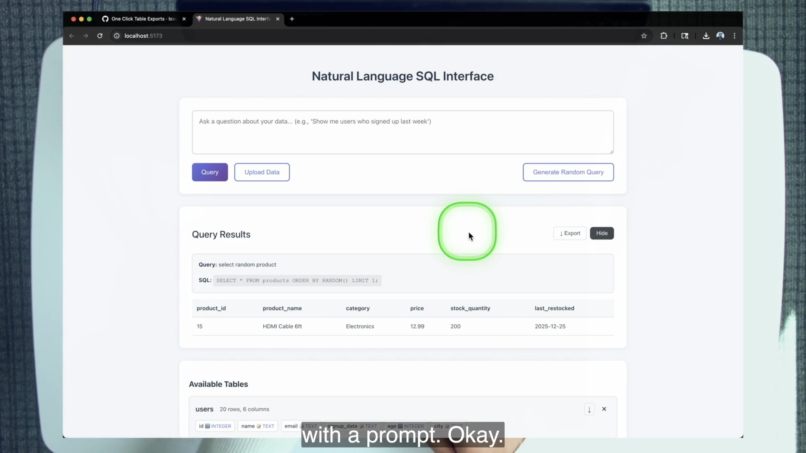
4 · Name it
Patch as a distinct problem class
Patch is not a smaller synonym for bug, chore, or feature planning. It begins after a specific gap is known. That permits a narrower prompt and smaller plan while keeping implementation and verification disciplined.
5 · Worked example — read the reuse seam
The planner is specialized; the implementor is shared
.claude/commands/patch.md requires a filename shaped like specs/patch/patch-adw-{adw_id}-{descriptive-name}.md, two to five focused steps, one to five validation commands or checks, a lines-of-code estimate, and risk level. It repeatedly says to address only the review change request.
create_and_implement_patch() in workflow_ops.py constructs the /patch request, includes optional spec and screenshot context, validates the returned patch path, then sends that plan to implement_plan(). The same /implement higher-order prompt used by other planned work now executes a different concrete artifact. This is composition without context merging.
uv run adws/adw_patch.py <issue-number> <adw-id>Pass the issue number, not the pull-request number. Dan briefly passes 15 instead of issue 14 on camera. The workflow’s state echo in issue comments is the check that helps catch the identity mismatch before you blame the tool.
6 · You try — write the trigger, not the CSS
Phrase a minimal out-loop request
On the issue, write a comment with the literal keyword adw_patch and one observable correction: make the download button sit immediately left of Hide. Before running, predict:
- the patch-plan directory and filename prefix,
- the maximum number of implementation steps,
- which prompt performs implementation,
- which visible proof will show success, and
- which identifier must remain the same across review, patch, and document.
7 · Common fail + fix
Failure: hand-fix, over-scope, or wrong identity
Hand-fix: the artifact improves and the layer does not. Over-scope: the patch planner cleans nearby code or redesigns the header, increasing risk and review burden. Wrong identity: a PR number is passed where the workflow expects the issue, separating the repair from its state.
Fix: route through the issue, use the existing ADW ID, repeat only the observed change request, inspect the generated plan for minimal scope, and verify the state echo before continuing.
8 · Current practice
Surgical repair remains a useful agent boundary
9 · Retrieval
How is the standalone patch triggered and run?
Reveal answer
An issue comment or body contains the literal adw_patch and change request, then uv run adws/adw_patch.py <issue#> <adw-id> runs the workflow.
Which prompt implements the patch plan?
Reveal answer
The shared /implement higher-order prompt.
Why not make the tiny change by hand?
Reveal answer
A hand-fix repairs only the artifact. The workflow run teaches and proves the system that must repair future artifacts out-loop.
10 · Teach-back
Defend the full patch workflow to a skeptical senior engineer who can fix the layout in ten seconds. Use two time horizons: this artifact and the next hundred similar misses.
Pass if you mention minimal scope, reproducibility, shared implementation, state continuity, and proof—not merely “automation is good.”
Documentation closes the lifecycle loop
The document step solves two problems together: preserve how the completed feature works, then teach future agents when that knowledge is relevant. The second artifact turns documentation from a shelf into a feedback path.
1 · Hook — concrete failure
The perfect document that no agent knows to read
A feature ships with a careful Markdown guide. The file sits under app_docs/. Six weeks later, a planning agent modifies the same export area without reading it because nothing in the planning prompt points to that file. Alternatively, every prompt loads every document “just in case,” and the repository’s growing memory becomes context pollution.
Documentation quality is only half the system. The other half is retrieval policy: a future worker needs a compact condition that says when to pull the deeper artifact. TAC-6 makes the documenter responsible for both.
2 · Picture — write once, conditionally retrieve
The final stage points back to the first
Plan
Build
Test
Review
Document
Conditional entry → next plan
The loop is not semantic decoration. document.md writes the application document and appends an entry to .claude/commands/conditional_docs.md. The bug, chore, feature, patch, and prime prompts read that index while preparing future work.
3 · Story — watch the fifth entry appear
Documentation becomes a routing instruction
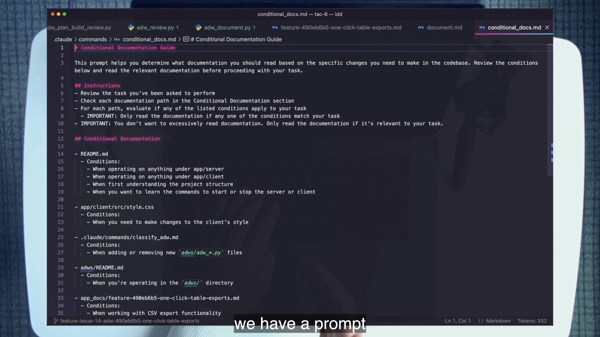
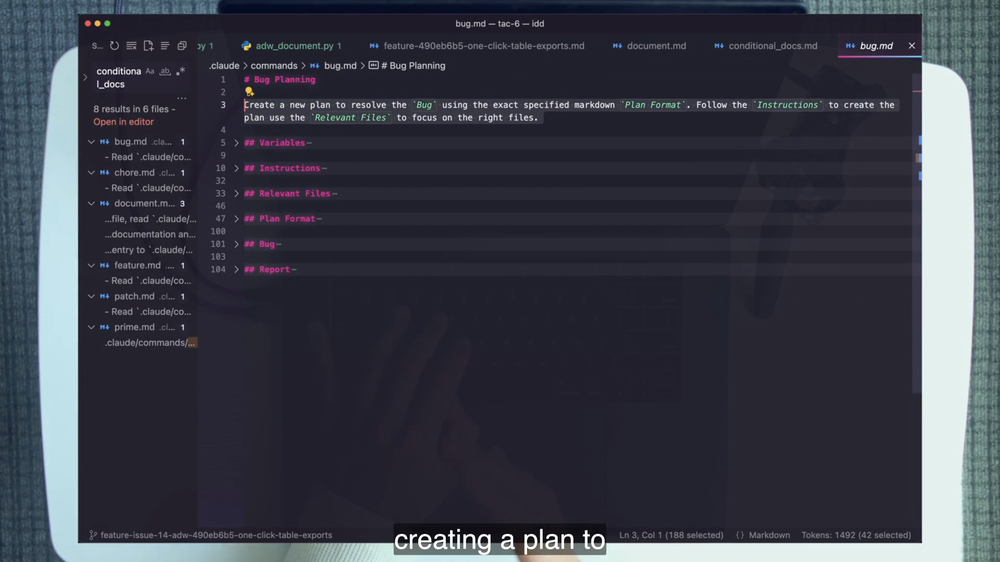
4 · Name it
Conditional documentation and the agentic-layer feedback loop
The repository also distinguishes homes. app_docs/ explains this application and its implemented features. ai_docs/ is for third-party material. specs/ holds plans. The classification reduces search ambiguity and lets prompts target a knowledge class instead of scanning a generic docs pile.
5 · Worked example — trace both outputs
One document request changes two durable artifacts
adw_document.py requires the issue number and ADW ID because documentation depends on prior branch, spec, and review state. It checks out the recorded branch and runs git diff origin/main --stat. When no changes exist, it reports a graceful no-op rather than inventing documentation. When changes exist, it finds the spec and review screenshot directory, then calls one documenter with [adw_id, spec_path, screenshots_dir].
document.md inspects changed files, examines significant diffs, reads the spec, copies provided PNG proof into app_docs/assets/, and writes app_docs/feature-{adw_id}-{descriptive-name}.md. Its committed template includes Overview, Screenshots, What Was Built, Technical Implementation, How to Use, Configuration, Testing, and Notes.
Then the same one-purpose documenter reads conditional_docs.md and adds a path with conditions. That second mutation is still part of the singular purpose: make the completed feature understandable to humans and retrievable by future agents.
diff + spec + review assetsapp_docs/feature-{id}-*.mdconditional_docs.mdbug · chore · feature · patch · prime6 · You try — write a retrieval condition
Make the condition specific enough to save context
Without copying the course’s runtime output, draft three conditions for an export feature document:
- one based on the user-visible feature area,
- one based on related implementation work, and
- one based on a troubleshooting situation.
Reject vague conditions such as “when working on the app.” That would load the document almost everywhere and defeat conditional retrieval. Pass when a planner can decide yes or no from the task description.
7 · Common fail + fix
Failure: human-only docs, bulk-loaded docs, or a human indexer
Human-only: the guide is readable but no planning prompt knows it exists. Bulk-loaded: all application knowledge enters every task. Human indexer: an engineer must remember to update conditional docs after the document agent runs, leaving a single point of failure at the loop’s most important seam.
Fix: make the documenter own both the deep artifact and its retrieval entry. Keep conditions narrow. Verify with a repository search that planning prompts actually consult the index.
8 · Current practice
The three-folder taxonomy makes the retrieval boundary clearer
9 · Retrieval
What two artifacts does the document step create or modify?
Reveal answer
An app_docs/feature-{adw_id}-*.md application document, including copied assets when available, and a new entry in conditional_docs.md.
Which five prompts read the conditional index?
Reveal answer
Bug, chore, feature, patch, and prime.
What is the baseline count before the lesson run?
Reveal answer
Exactly four committed entries; the documenter’s export entry makes the fifth in Dan’s demonstrated run.
10 · Teach-back
Teach the whole plan-to-document-to-plan cycle in one breath. Then explain why copying docs into every prompt would break the same minimum-context principle the loop is meant to support.
Pass if you name the writer, index mutation, five readers, matching condition, and next planning step.
When an agent misses, blame the layer
The review system declares success while its own screenshot shows failure. Dan’s response is the chapter’s transferable posture: trace the requirement end to end, locate the broken handoff, and encode the repair where that responsibility belongs.
1 · Hook — concrete failure
The model is an easy target and a useless repair location
The issue contains the placement requirement. The generated plan carries it. The implementation violates it. The reviewer produces a screenshot showing the violation and still reports success. Saying “the model failed” is emotionally satisfying and operationally empty. It does not tell you which prompt, workflow choice, tool flow, or evidence contract to change.
The opposite mistake is just as costly: silently move the button by hand and merge. The artifact improves, the review prompt remains blind, and the same failure class is ready to repeat.
2 · Picture — trace the requirement
Do not guess which link broke
Placement present?
yesRequirement carried?
yesPlacement obeyed?
noEvidence read?
captured, not visually consumedThis trace rules out vague blame. The request did not disappear between issue and plan. The implementation missed it, and the chosen workflow did not include the test step that might have caught it. The reviewer also failed to reason over the images it captured.
3 · Story — the rejected global fix
Put the correction inside the responsible ADW
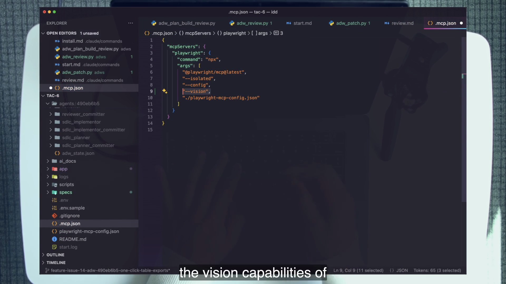
--vision in global MCP configuration, then rejects that placement because the fix belongs inside the review workflow’s instruction.The camera captures a useful moment of design judgment. A global configuration change might make image use possible, but it does not express the reviewer’s responsibility. The chosen correction is prompt-level: for every image taken, read it during review. Now the behavior is versioned with the one-purpose review contract and can be evaluated from the same state.
4 · Name it
Fix the end-to-end portion, not the thing that went wrong
“Blame” here means responsibility that leads to a change you control. The model may have produced the incorrect judgment, but the agentic layer chose the context, prompt, tools, evidence flow, and stage sequence. Those are the design surfaces the engineer can improve.
5 · Worked example — two causes, one better workflow
The miss was architectural, not mysterious
Cause one: the demo launched adw_plan_build_review.py, whose docstring states that testing is skipped. Dan identifies adw_plan_build_test_review.py as the likely winning workflow because the UI test may have caught the placement issue before review.
Cause two: the review prompt instructed the agent to take screenshots, but the workflow did not ensure that their visual content flowed into reasoning. The evidence reached the human but not the reviewer’s decision. The correction belongs in review.md, not as an ad hoc global flag.
Secondary lesson: documentation later uses the review screenshots. Because the patch runs after the original review and the review is not rerun on camera, a copied screenshot can be stale. Artifact lineage matters. A complete repair should refresh proof after the fix so documentation describes the final state.
6 · You try — failure-class worksheet
Move from complaint to owned change
- State the expected result and observed result.
- Prove whether the expectation exists in the issue.
- Prove whether it survives into the plan.
- Name the workflow phases that did and did not run.
- Show which evidence the reviewer produced and which it consumed.
- Write the smallest prompt, workflow, or template change that prevents the class.
- Describe the rerun that would prove the layer improved.
7 · Common fail + fix
Failure: model blame, artifact rescue, or global configuration drift
Model blame points at a component you cannot directly repair. Artifact rescue hides the failure and preserves the flawed system. Global drift changes broad configuration for one workflow-specific responsibility, making behavior harder to version and reason about.
Fix: keep the correction as close as possible to the owning purpose. A review-consumes-its-images instruction belongs in the review prompt. A missing lifecycle question belongs in the composer. A recurring application fact belongs in conditional documentation.
8 · Current practice
The specific vision gap has moved; the repair posture has not
9 · Retrieval
What were the two root causes for the missed placement bug?
Reveal answer
The chosen composer skipped testing, and the review workflow captured screenshots without ensuring their visual content was read into the reviewer’s reasoning.
Where did Dan choose to put the image-reading fix?
Reveal answer
In the review prompt’s instructions, not global .mcp.json configuration.
10 · Teach-back
Retell the miss without using the phrase “the model failed.” Walk issue → plan → workflow selection → screenshot production → screenshot consumption → prompt repair → rerun.
Pass if your explanation ends with a testable layer change, not a moral about intelligence.
Presence, proof, and the honest scoreboard
The lesson closes by grading the run, including its dents. KPIs are diagnostic instruments: attempts reveal misses, presence reveals human relay work, streak reveals repeatability, and size reveals the unit of delegated engineering.
1 · Hook — concrete failure
A shipped feature can still expose a weak system
The export feature reaches a pull request with implementation, tests, review images, a patch, and documentation. It is tempting to report only success. But the feature needed a second ADW to fix placement, the streak reset, and the human intervened beyond the ideal two moments. Hiding those costs would hide exactly where the system should improve.
The KPI frame prevents outcome bias. A good final artifact does not prove a good lifecycle. A poor first artifact does not make the system worthless if the proof and repair loop reduce detection and recovery cost. Score the process that produced the result.
2 · Picture — lesson-end scorecard
Read every number as a prompt-improvement clue
Attempts
1 → 2The patch added a run. Find the miss that forced it.
Size
~900 LOCTwo endpoints, two UI surfaces, tests, plan, and docs in the demonstrated scope.
Streak
reset to 1One prompt did not carry the feature cleanly through.
Presence
~3Input, issue spotting/patch, and final review versus an ideal of two.
3 · Story — proof makes the extra presence cheap
The review system carries the problem to the human
The human presence count is not ideal, yet the intervention is efficient. The review images expose the misplaced control directly on the issue. Dan does not reconstruct the application state from logs or inspect every changed line to discover the defect. The proof surface delivers the critical path, and the patch workflow delivers the repair receipts.
The lesson generalizes beyond frontend work. A model classifier can produce evaluation metrics or a report. A data-analysis workflow can produce a chart or comparison table. A rapid prototype can produce a live artifact or video. The form changes; the review step should embed whatever hard evidence lets a human decide whether the result is what was asked for.
4 · Name it
Agentic proof of value, live assets, and ideal presence
Ideal does not mean abolishing judgment. It concentrates human attention where it has highest leverage. The engineer frames the work and makes the consequential acceptance decision. The system carries the intermediate transitions and evidence.
5 · Worked example — convert KPI movement into backlog
Every dent suggests an owned improvement
Attempts rose
Add image consumption to review and choose the composer that includes test.
Presence rose
Move placement detection into proof-aware review rather than human browsing.
Streak broke
Rerun the same class after the layer changes; do not declare recovery from one lucky pass.
Size is the counterweight. The lesson’s work is not reduced to a one-line CSS correction. The demonstrated branch includes two endpoints, two user surfaces, tests, a plan, documentation, and approximately 900 lines of engineering change. A larger delegated unit can justify substantial workflow machinery, but a large number does not excuse weak conformance.
6 · You try — score your lab run
Count without flattering yourself
- Count attempts from initial workflow through every patch.
- Estimate size from
git diff --stat origin/mainand name the artifacts included. - State whether this run extends or resets your success streak.
- Count every moment your judgment or relay was required.
- For each excess attempt or presence, name the owning prompt or workflow improvement.
Do not game attempts by refusing to patch or presence by ignoring a visible defect. Metrics serve the artifact and user, not the other way around.
7 · Common fail + fix
Failure: vanity metrics and false zeroes
A team keeps attempts at one by shipping the first answer, or reports presence as zero because the reviewer never looked. Another team celebrates a huge diff while hiding a spec miss. The numbers improve and the engineering degrades.
Fix: bind metrics to a correct, reviewed unit. Count the repair honestly. Use upward movement as a pointer to system work. A metric is valuable when it causes a better prompt, workflow, proof asset, or boundary.
8 · Current practice
Proof quality matters more as execution gets cheaper
9 · Retrieval
What is ideal presence, and at which two moments?
Reveal answer
Two: prompt input at the beginning, then review and pull-request merge at the end.
What should an increase in attempts cause?
Reveal answer
A diagnosis and improvement of the prompt or workflow whose miss forced the extra attempt.
Name three possible hard proof assets.
Reveal answer
An image, video, report, metrics artifact, chart, or live application surface.
10 · Teach-back
Present the lesson’s scorecard without defending it. For each KPI, state the observed value, what it reveals, and one layer improvement.
Pass if your listener understands why a correct final button does not erase the extra attempt.
Current practice: keep the tactic, modernize the wrapper
The extract identifies seven course-era gaps. None overturns the lesson’s spine. Use the transparent course machinery to learn the primitive, then map it to the current surface you operate.
Course system
Every moving part is visible.
- Separate headless
claude -pprocesses - Python orchestration and per-agent folders
- Prompt-level model map
- Screenshot paths optionally uploaded to R2
- Image capture without guaranteed visual consumption
Current mapping
The same boundaries can be productized.
- Native subagents or Skills for interactive focus
- External workflows retained for deterministic triggers
- Purpose-level model and tool policy
- Several artifact-hosting paths
- Image reading treated as default review behavior
Two phase-one video overlays
The extract approves exactly two current-practice videos for this chapter, within the required one-to-three cap. They deepen the tactic without replacing the course evidence.
RAW Agentic Coding: ZERO to Agent SKILL
Maps the committed one-purpose prompt to the current Skill/subagent surface. Use it after you can explain the course’s hand-rolled boundary.
Watch the current-practice overlay →3 Codebase Folders
Develops the specs/, ai_docs/, and app_docs/ taxonomy that the document workflow feeds.
One live repository drift to investigate
.claude/commands/classify_adw.md lists /adw_plan_build_review and /adw_plan_build_document as valid. The runtime ADWWorkflow Literal and AVAILABLE_ADW_WORKFLOWS omit both. extract_adw_info() validates classifier output against the runtime allowlist, so webhook or cron classification filters those two composers out even though manual scripts exist.
This is not a dated feature. It is a live prompt-to-code contract drift and an ideal stretch exercise: ask the system to prove why the trigger cannot launch those composers, patch the contract, and add evidence. The lesson’s own architecture contains the kind of mismatch its review discipline should catch.
Graded lab · Focused agents complete the SDLC
Run the real TAC-6 review, patch, and document workflows against a GitHub repository you control. The lab is operational: you will spend real model tokens, create issue/PR artifacts, inspect the live app, and keep your hands off application code.
Checkpoint 0 · Own the review surface 15 min
- Clone the lesson repository and enter it:
git clone https://github.com/disler/tac-6.git && cd tac-6. - Create a GitHub repository you control. Remove the course remote, add your remote as
origin, and pushmain. Review, patch, and document report through issues and pull requests, so ownership is functional context. - Verify
gh auth statusanduv --version. - Boot Claude Code and run
/install. Fill the root.envfrom.env.samplewithANTHROPIC_API_KEY,CLAUDE_CODE_PATH, andGITHUB_REPO_URL. Configureapp/server/.envfor the app’s own Natural-Language-to-SQL provider. - Optionally configure the four Cloudflare R2 values. Without them, expect local screenshot paths in comments; the uploader’s silent disable is intentional.
- Run
/start, openlocalhost:5173, and execute the five-users query to confirm the application works before the agentic run.
Pass evidence
- Your owned remote is
origin. - The GitHub CLI, uv, Claude Code, and app are available.
- You can explain why issue and PR ownership is part of review/patch/document, not administrative setup.
Checkpoint 1 · Plan → build → review 25 min
- Create an issue titled One Click Table Exports.
- Ask for CSV export for tables and query results, two new endpoints, an appropriate download icon, and precise placement: the control directly left of the table’s
xand directly left of the query results’ Hide control. - Launch
uv run adws/adw_plan_build_review.py <issue#>. Do not supply an ADW ID for the initial run; one will be created. - Hands off. Do not edit, change branches, or run a parallel workflow while this course composer owns the checkout.
- Watch
agents/{adw_id}/and the issue comments. Inspectadw_state.jsonas issue, branch, plan file, and issue class populate. - When review posts, inspect the success flag, standup-style summary, one-to-five numbered screenshots or local paths, severity groups, and raw JSON.
Pass evidence
- A branch and pull request exist from the workflow.
- The issue carries a JSON-backed review report.
- You can point from the ADW ID to state, agent folders, branch, plan, and review evidence.
Checkpoint 2 · Read the review contract 15 min
- Open
.claude/commands/review.mdbesideadws/adw_modules/data_types.py. - Map every prompt output field to
ReviewResultorReviewIssue. - Find
Literal["skippable", "tech_debt", "blocker"]andMAX_REVIEW_RETRY_ATTEMPTS = 3. - Locate the code path that synthesizes a blocker when agent execution or JSON parsing fails.
- Explain why e2e Markdown files are navigation guides, not tests, in this prompt.
- Compare the prompt’s “JSON array” sentence with its object example and the
ReviewResultparser. Record the contradiction as a prompt↔code drift. - Spot the
./claude/commands/e2epath typo and record it as prompt/code accuracy evidence; do not silently rewrite unrelated lesson files.
Cold-answer gate
Without notes: which severities block, which auto-resolve, what caps resolution, what parse failure becomes, and what review asks that testing does not.
Checkpoint 3 · Run the patch out-loop 20 min
- Inspect the controls in the running app. If your implementation already matches the exact placement, use Claude Code—not your editor—to introduce the demonstrated deviation so the repair loop has a real blocker.
- On the issue, comment with the literal keyword
adw_patchand one observable request: the download control must sit directly left of Hide. - Run
uv run adws/adw_patch.py <issue#> <adw-id>. Use the issue number, not the PR number. - Verify a plan appears under
specs/patch/patch-adw-{adw_id}-*.md. Inspect that it contains two-to-five focused steps, validation, scope estimate, and risk. - Verify the app shows the corrected placement, a patch commit exists, issue comments report progress, and the existing pull request updates.
One-sentence gate
Explain why a full workflow is justified for a change you could hand-fix in ten seconds. Your answer must include system learning, reproducibility, and future out-loop repair.
Checkpoint 4 · Document and close the loop 15 min
- On the same state, run
uv run adws/adw_document.py <issue#> <adw-id>. - Verify
app_docs/feature-{adw_id}-*.mdexists and follows the feature-document shape. - Verify screenshots were copied into
app_docs/assets/when local PNG inputs were available. - Verify
.claude/commands/conditional_docs.mdgained one agent-written entry. The committed baseline has four entries. - Search
conditional_docsand prove that bug, chore, feature, patch, and prime read the index while document writes it.
One-breath gate
Document writes the feature guide and appends its conditions; five planning/orientation prompts read the index; a future matching task loads the guide without loading every guide.
Checkpoint 5 · Stretch drills 15–40 min
- Winning workflow: on a fresh issue, use
adw_plan_build_test_review.py. Record whether test or review catches the planted placement deviation. - Read your proof: through Claude Code, add the review instruction that every captured image must be read. Rerun review on the same pre-review state and compare
ReviewResultrecords. - Purpose eval: change only the review model route, restore pre-review state, rerun, and compare typed outcomes. Treat course-era aliases as local code facts, not universal recommendations.
- Agent census: map every
agents/{adw_id}/folder to one slash command and one purpose. Confirm no agent ran a second prompt. - Trigger drift: compare
classify_adw.mdwithADWWorkflowandAVAILABLE_ADW_WORKFLOWS. Prove why the two new composers cannot launch through classifier-driven triggers, then repair through an agentic patch if time permits.
Submission checklist
- Zero application-code lines were typed by hand.
adw_state.jsonshows the five key fields populated across phases.- The issue contains a JSON-backed review with one-to-five screenshots or expected local paths and severity-classified findings.
- You can state the blocker and retry policies without notes.
- A minimal patch plan exists and the corrected placement is visible in the app and PR.
- An application document exists, assets were handled, and conditional documentation changed agentically.
- You can state all five SDLC questions, the test/review distinction, three constraints, compact’s limitation, and ideal presence.
Grading rubric · 12 points
Dimension
0 · Missing
1 · Partial
2 · Mastery
Focused execution
Hand-edited app or mixed runs.
ADW used with unclear boundaries.
Zero hand edits; serialized one-purpose phases.
State trace
No ADW evidence.
Can find state but not explain it.
Traces ID through branch, plan, agents, issue, and PR.
Review contract
No typed report.
Report exists; policy recall weak.
Explains schema, severities, parse failure, and cap.
Patch loop
Hand-fix or no correction.
Patch runs; scope or proof incomplete.
Minimal plan, shared implementor, visible fix, PR receipt.
Document loop
No app document.
Document exists without proven retrieval path.
Doc + assets + agentic index entry + five readers proven.
Teach-back
Cannot state core distinctions.
Recognizes terms with notes.
Cold explanation connects focus, proof, repair, memory, and KPIs.
Cumulative mastery
Answer before opening any details. Recognition earns half credit; a correct explanation tied to a course artifact earns full credit.
Round 1 · Questions and focus
1. State all five SDLC questions in order and name the one that demands proof.
Reveal answer
Plan—what are we building? Build—did we make it real? Test—does it work? Review—is it what we asked for, prove it? Document—how does it work? Review demands proof.
2. What does one-agent-one-prompt-one-purpose prohibit, and what does it allow?
Reveal answer
It prohibits one agent running multiple prompts or owning multiple lifecycle questions. It allows a large, sophisticated prompt that does substantial work for one purpose.
3. Define the minimum context principle operationally.
Reveal answer
Give the worker every artifact needed for its one question, withhold unrelated phase history, and carry continuity through dense state and durable files.
4. Name the three constraints, the two specialized agents bypass, and the excluded non-constraint.
Reveal answer
Context window, codebase-plus-problem complexity, and your abilities. Specialized agents bypass window and personal-ability constraints. Model intelligence is deliberately not treated as a constraint or excuse.
5. Why is compact a band-aid rather than the tactic?
Reveal answer
It compresses an overloaded context and loses information. Fresh purpose-specific windows prevent irrelevant history from accumulating.
Round 2 · Review and repair
6. The CSV download succeeds. Why can review still fail?
Reveal answer
Testing proved behavior; review compares the finished artifact with all requested requirements, including exact control placement.
7. Name every ReviewIssue severity and the release behavior of each.
Reveal answer
Skippable: visible, non-blocking. Tech debt: visible future cost, non-blocking. Blocker: success false, immediate patch-and-review resolution.
8. What happens if review output cannot be parsed?
Reveal answer
The code creates a failed ReviewResult with a synthetic blocker describing the parse failure, so the pipeline fails loud.
9. What caps review resolution and why?
Reveal answer
Three attempts. The cap prevents an agentic repair loop from continuing indefinitely.
10. How does a patch plan differ from a feature plan?
Reveal answer
It starts from one known review change request, addresses only that issue, uses two-to-five focused steps, and includes bounded validation, scope, and risk.
11. Which prompt implements a patch, and what does that prove about composition?
Reveal answer
The shared /implement prompt. Specialized planners can produce common plan artifacts consumed by a reusable implementor without merging contexts.
Round 3 · State, memory, and evals
12. Why do review and document require the ADW ID, and does that state persist screenshot URLs?
Reveal answer
They depend on prior state to locate the issue, branch, spec/plan, and issue class. Screenshot URLs do not persist because the state object filters that field; document falls back to the local review-image directory.
13. What two durable outputs make documentation a loop?
Reveal answer
The application feature document and an appended conditional-doc entry that directs future agents to it when task conditions match.
14. Which prompts read conditional documentation?
Reveal answer
Bug, chore, feature, patch, and prime; document is the writer.
15. Distinguish specs/, ai_docs/, and app_docs/.
Reveal answer
Specifications/plans, third-party knowledge, and documentation about the application’s own implementation.
16. What makes a prompt change evaluable?
Reveal answer
A committed prompt, reproducible starting state, one changed variable, and a comparable typed result plus proof artifacts.
Round 4 · System judgment
17. Give both causes of the missed button placement and the chosen repair location.
Reveal answer
The composer skipped testing, and review captured images without consuming their visual content. The image-reading correction belongs in review.md; the fuller composer includes test.
18. What does “blame the layer” require before changing anything?
Reveal answer
Trace the expectation through issue, plan, chosen phases, prompt, tool/evidence flow, implementation, and review so the change lands at the owning boundary.
19. What is ideal presence, and how did the demo differ?
Reveal answer
Ideal presence is two: input and final review/merge. The demo was roughly three because a human spotted the issue and initiated or checked the patch before final review.
20. Explain the classifier-trigger drift.
Reveal answer
The classifier prompt lists plan-build-review and plan-build-document, but the runtime Literal and allowlist omit them. Runtime validation filters those outputs, so classifier-driven webhook/cron paths cannot launch the composers.
Capstone teach-back · seven minutes
Without notes, teach the chapter as one causal chain:
- Five questions require five focused stages.
- Fresh context prevents cross-stage pollution.
- Committed prompts and state make steps evaluable.
- Typed review turns proof into a governed decision.
- Patch routes a miss through the system instead of your hands.
- Document writes memory and the conditions for retrieving it.
- KPIs reveal where the layer still requires improvement.
Expert pass: your listener can predict why the screenshot-blind reviewer passed, locate the prompt-level correction, and explain why conditional docs do not violate minimum context.
TAC-6 glossary
Use these narrow definitions when reviewing a workflow or teaching the tactic. Each term maps to a demonstrated prompt, script, artifact, or decision rule.
- One agent, one prompt, one purpose
- Tactic #6: one fresh named agent runs exactly one prompt to answer one lifecycle question. Prompt size and task difficulty may still be large.
- SDLC as questions
- Plan, build, test, review, and document expressed as five distinct uncertainties with executable answers.
- Review
- Spec-conformance work asking whether the implementation is what was requested and requiring hard proof.
- Testing
- Behavioral verification asking whether the implementation works. It supports but does not replace review.
- Review velocity
- How quickly a responsible human can reach a high-confidence accept/reject decision from the provided evidence.
- Context pollution
- Degraded agent focus caused by unrelated, stale, superseded, or cross-purpose information occupying the same context.
- Minimum context principle
- Supply the minimum complete context needed for one purpose and withhold irrelevant lifecycle history.
- Three constraints
- Context-window capacity, codebase-plus-problem complexity, and the engineer’s abilities. Specialized agents bypass the first and reduce dependence on the third.
- Committed prompt
- A version-controlled instruction file whose changes can be reviewed, restored, and compared across runs.
- Agentic-layer eval
- A comparison that restores a reproducible workflow state, changes one purpose-level variable, reruns, and compares typed outputs and proof.
- ReviewResult
- The Pydantic contract containing success, summary, issue list, screenshot paths, and uploaded screenshot URLs.
- Severity classes
skippable,tech_debt, andblocker. Only blockers prevent success and enter automatic resolution.- Loud parse failure
- Conversion of an unparseable review response into a synthetic blocker instead of silent success or missing data.
- Patch
- A minimal problem class addressing one known review change request through a focused plan and shared implementor.
- Conditional documentation
- An index of document paths and task conditions that tells agents when deeper repository knowledge should be read.
- app_docs
- Documentation about the application’s own implemented behavior and architecture.
- ai_docs
- Third-party or external technical documentation needed by agents.
- specs
- Concrete planning artifacts, including focused patch plans under
specs/patch/. - Agentic-layer feedback loop
- The connection in which the documenter updates conditional retrieval and future planning agents read matching application knowledge.
- Blame the layer
- Trace a failure through controllable workflow surfaces and encode the repair in the owning prompt, composer, contract, or documentation path.
- Agentic proof of value
- A hard artifact—such as an image, video, report, metric, or live surface—delivered to the review system.
- Live asset
- Directly inspectable proof that reduces the work required to validate what the agent built.
- Presence
- Human intervention moments per shipped unit. The lesson’s ideal is two: prompt input and final review/merge.
- ADW ID
- The run identifier tying issue, branch, plan, per-agent artifacts, review proof, patch, and documentation to shared persistent state.
- Trigger drift
- A mismatch in which classifier prompt vocabulary includes workflows omitted from runtime types or allowlists, preventing trigger-driven launch.